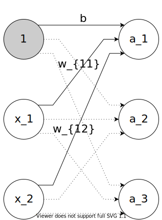
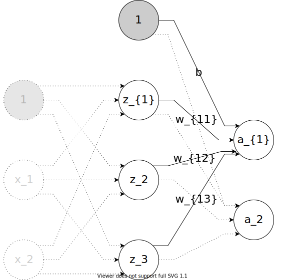

4.4. 3層ニューラルネットワークの実装¶
4.4.1. 入力層から第1層への信号の伝達¶

第1層を式で表すと:
これを行列にすると…入力\(x_1, x_2\)は
バイアス\(b_1, b_2, b_3\)は
重み$ w_{11}, w_{21}, w_{31}, w_{12}, w_{22}, w_{32}$は
入力・バイアスと重みの総和\(a_1, a_2, a_3\)は
そして、\(A\)を出力する式は
Pythonであらわすとこうなります。
[1]:
import numpy as np
X1 = np.array([1.0, 0.5]) # 入力層の値
W1 = np.array([[0.1, 0.3, 0.5], [0.2, 0.4, 0.0]]) # 重み
B1 = np.array([0.1, 0.2, 0.3]) # バイアス
A1 = np.dot(X1, W1) + B1 # 入力 x 重み + バイアス
print(A1)
[0.3 0.7 0.8]
では、この総和\(A\)を活性化関数に入れます。活性化関数にはシグモイドを使用してみます。
[2]:
import os
import sys
module_path = os.path.abspath(os.path.join('..', 'myModules'))
if module_path not in sys.path:
sys.path.append(module_path)
from activator import sigmoid # activator.pyにあるsigmoidを使う
Z1 = sigmoid(A1) # 活性化関数による、入力 x 重み + バイアスに対する計算 = 第1層の値
print(Z1)
[0.57444252 0.66818777 0.68997448]
入力層->第1層の計算は以上です。
4.4.2. 第1層から第2層¶
第2層では、第1層の出力の総和から再び出力します。

\(z_1, z_2, z_3\) は第1層の計算結果とします。
4.4.2.1. 🤔\(b\)はどこから¶
今回のニューラルネットワークの構築に使用しているモデルが「パーセプトロン」を基にしているだからです。
パーセプトロンに立ち戻ります。 > パーセプトロンの条件式を見てみよう >
> > ここで、\(\theta = -b\) とすると > > … > > 式変形して > >
> > ここで、\(b\) を バイアス と呼び、\(w_1\) \(w_2\) を 重み と呼びます
パーセプトロンは、\(\theta\)…閾値…と比較して、0またｈ1を出力するアルゴリズムでした。つまり入力以外に必ず閾値が必要なのです。
4.4.2.2. 🤔入力が3つあるけど？¶
パーセプトンは(というよりニューラルネットワークは)、入力がいくつあってもよいのです。
4.4.2.3. Pythonによる実装¶
[3]:
W2 = np.array([[0.1, 0.4], [0.2, 0.5], [0.3, 0.6]]) # 重み
B2 = np.array([0.1, 0.2]) # バイアス
A2 = np.dot(Z1, W2) + B2 # 第1層の値 x 重み + バイアス
Z2 = sigmoid(A2) # 第2層の値
print(Z2)
[0.62200664 0.76456201]
4.4.3. 第2層から出力層へ¶
出力層では、活性化関数による計算は行いません。総和だけを求め、その値を出力します。
入力をそのまま出力することを、数学では「恒等写像」(ｺｳﾄｳｼｬｿﾞｳ)といいます。
[4]:
W3 = np.array([[0.1, 0.3], [0.2, 0.4]]) # 重み
B3 = np.array([0.1, 0.2]) # バイアス
A3 = np.dot(Z2, W3) + B3 # 第2層の値 x 重み + バイアス
Y = A3 # 恒等写像
print(Y)
[0.31511307 0.6924268 ]
4.4.4. 実装のまとめ¶
[5]:
def init_network():
network = {}
network['W1'] = np.array([[0.1, 0.3, 0.5], [0.2, 0.4, 0.6]])
network['b1'] = np.array([0.1, 0.2, 0.3])
network['W2'] = np.array([[0.1, 0.4], [0.2, 0.5], [0.3, 0.6]])
network['b2'] = np.array([0.1, 0.2])
network['W3'] = np.array([[0.1, 0.3], [0.2, 0.4]])
network['b3'] = np.array([0.1, 0.2])
return network
def forward(network, x):
W1, W2, W3 = network['W1'], network['W2'], network['W3']
b1, b2, b3 = network['b1'], network['b2'], network['b3']
a1 = np.dot(x, W1) + b1
z1 = sigmoid(a1)
a2 = np.dot(z1, W2) + b2
z2 = sigmoid(a2)
a3 = np.dot(z2, W3) + b3
y = a3
return y
network = init_network()
x = np.array([1.0, 0.5])
y = forward(network, x)
print(y)
[0.31682708 0.69627909]
init_networkで重みとバイアスの初期化forwardで入力信号を出力信号に変換するforwardの逆の処理…出力信号から入力信号…はバックフォワードという